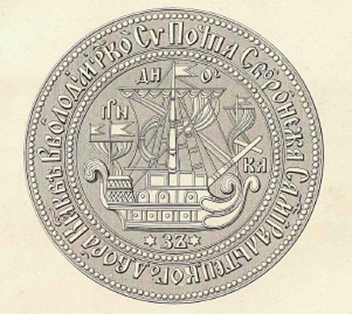
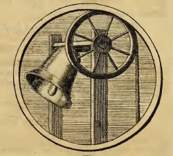
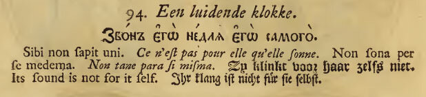
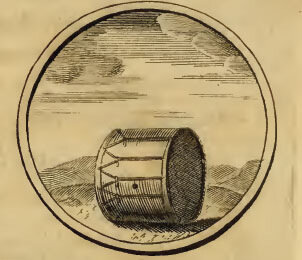
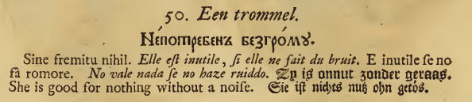
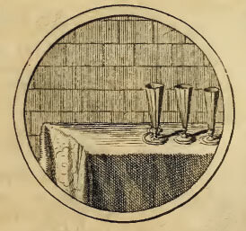
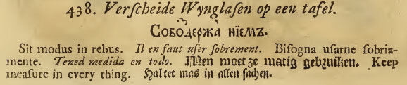

Начинаем список кораблей Азовского флота, построенных на верфях Воронежского Адмиралтейского двора.

Почтовая печать Воронежского Адмиралтейского двора
1. Корабль АПОСТОЛЪ ПЕТРЪ (Пушек-36. Длина – 113 фут. Ширина – 25 фут.) Заложен в Воронеже в марте 1696 г. Спущен 26 апреля 1696 года. Достройка производилась на пути к Азову. В 1710 г. nри осмотре в Азове «оказался гнилъ и въ починку негоденъ.»
2. Корабль АПОСТОЛЪ ПАВЕЛЪ (Пушек – 36. Длина – 98фут. Ширина – 30 фут.) Заложен в Воронеже в марте 1696 г. В описных книгах судов Азовского флота показан находящимся в Азове в1698 г. В 1710 г. nри осмотре в Азове «оказался гнилъ и въ починку негоденъ.»
3. Галера ПРИНЦИПІУМЪ (Пушек – 3. Банок для гребцов – 34) Заложена в селе Преображенском под Москвой в конце 1695 г. В феврале 1696 г. перевезена в Воронеж, собрана и 3 апреля спущена на воду. Во время осады Азова служила местом пребывания Петра I.
Далее следует перечень кораблей, названия которых не сохранились. Неизвестно также, присвоены ли им были символы и девизы. Эти корабли упоминались в переписке и в описных книгах по именам их командиров. Заложены в селе Преображенском под Москвой в конце 1695 года. В феврале 1696 года перевезены в Воронеж, собраны и отправлены в Азов.
Цифра в первых скобках показывает число пушек, во вторых – число банок у галер.
| 4. Вице-адмирала Лима (4) (28) | 16. Капитана Гасениуса (3) (34) |
| 5. Капитана Вейде (3) (28) | 17. Капитана Ив. Хотунского (4) (36) |
| 6. Капитана Пристава (3) (28) | 18. Капитана Олешева (3) (36) |
| 7. Капитана Быковского (4) (28) | 19. Капитана Ушакова (3) (36) |
| 8. Капитана Ф.Хотунского (3) (28) | 20. Капитана Репнина (3) (36) |
| 9. Капитана Гротта (3) (28) | 21. Капитана Романа Брюса (4) (36) |
10. Шаутбенахта де-Лозьера (3) (30) | 22. Капитана Турлавила (3) (-) |
11. Капитана Якова Брюса (-) (30) | 23. Капитана Шмидта (6) (38) |
| 12. Капитана Инглиса (3) (32) | 24. Брандер князя Черкасского (2) (26) |
| 13. Капитана Кунингама (4) (32) | 25. Брандер князя Велико-Гагина (3) (28) |
| 14. Капитана Трубецкого (5) (34) | 26. Брандер князя Лобанова-Ростовского (-) (-) |
| 15. Капитана Буларта (3) (34) | 27. Галера капитана Леонтьева (-) (-) |
Ниже в списке перечисляются «корабли-баркалоны», построенные кумпанствами. Заложены в Воронеже в 1697 г. Спущены в мае 1699 г. (кроме «Колокола»). В апреле 1702 г. переведены в устье Дона. В первых скобках по-прежнему число пушек, во вторых – численность экипажа. В скобках сразу за названием приведено встречающееся в переписке имя, представляющее транслитерацию названия соответствующей эмблемы на иностранном языке или другой вариант названия. Вообще, в отношении одного и того же корабля в переписке использовались различные названия: имя на русском, транслитерация с иностранного (в основном, голландского) или девиз. Вот образец такого письма: «... надобно морского каравана капитану Ивану Бекману на три корабля именуемые: "Смертью его исцеляются", "Крепость", "Дверь отворена", по полусажени дров для варения смолы». Первый из указанных в письме кораблей "Скорпион", которому и принадлежит этот девиз.
28. КОЛОКОЛ (Клокъ) (46/42) (180)(Спущен в декабре 1697 г.) (Кумпанство казанского митрополита)
Это первый корабль, которому был присвоен девиз с соответствующей эмблемой. КОЛОКОЛ: Звон его не для него.
Привожу изображение символа из амстердамского издания «Символы и Емблемата» 1705 года. Перечень девизов продублирован на восьми языках: русском, латинском, французском, итальянском, испанском, голландском, английском и немецком.

Следует учитывать, что русский шрифт типографии Тесинга, в которой была напечатана книга, отличался от обычного московского: он мелкий, часть букв сохранила старую форму кирилловской печати, некоторые по своим очертаниям похожи на будущий гражданский шрифт. Это хорошо видно на фронтисписе издания, изображение которого я привел в прошлый раз. Чтобы не искажать вид девизов, приведу изображение их в том виде, как они приведены в издании.

29. ЛИЛIЯ (36/34) (135) (Кумпанство Вологодского архиепископа)
30. БАРАБАНЪ (Трумель) (36/26) (135) Непотребен без грому. (Кумпанство боярина Федора Петровича Шереметева).
 
31. ТРИ РЮМКИ (Дри рюморъ. На столѣе три рюмки) (36/26) (135) Держите во всех делах меру. (Кумпанство боярина Тихона Никитича Стрешнева).
 
Издатель Ян Тесинг не знал русского языка, поэтому смысл девизов не всегда ясен. Его приходится восстанавливать из последующей переписки и из текста на другом языке.
Продолжу список в следующий раз.